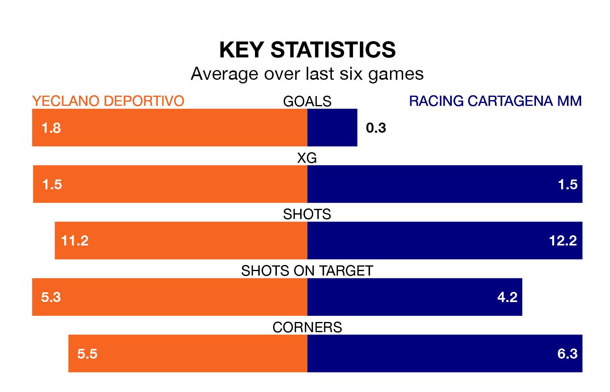

Yeclano Deportivo are heavy favourites to keep all three points at home in Sunday's kick-off against Racing Cartagena MM.
Yeclano Deportivo, who sit top of Segunda División RFEF Group 4 with 20 games played, are priced at 1.6 to seal victory at the Estadio Municipal La Constitución.
Sitting 10 places and 18 points behind them in the table, Racing Cartagena MM are 5.0 to win with *Betting Company*, while the draw is at 3.1.
Yeclano Deportivo are in exceptional form in Segunda División RFEF Group 4, with six wins and no losses from their last six games.
With a win and three draws over that period, Racing Cartagena MM's form is much worse – they have taken six points from 18, compared to the home side's 18.
With 29 goals in 20 games so far this season, Yeclano Deportivo are the league's second-highest scorers with 1.4 goals per game. And they are conceding fewer than average, letting in 16 goals at a rate of 0.8 per game.
The visitors, meanwhile, are below average scorers, with 0.7 goals per game, compared to a league average of 1.0. They have conceded 0.8 goals per game.
In the last three years, Yeclano Deportivo and Racing Cartagena MM have played each other on three occasions. they drew all of them.
Their last meeting was on September 24, when they played out a 1-1 draw.
Yeclano Deportivo's last match was on January 28, a 4-1 win against Linense.
Racing Cartagena MM drew 1-1 with Real Betis B last time out, also on January 28.
Updated: 13:20 (UTC), 29/01/24